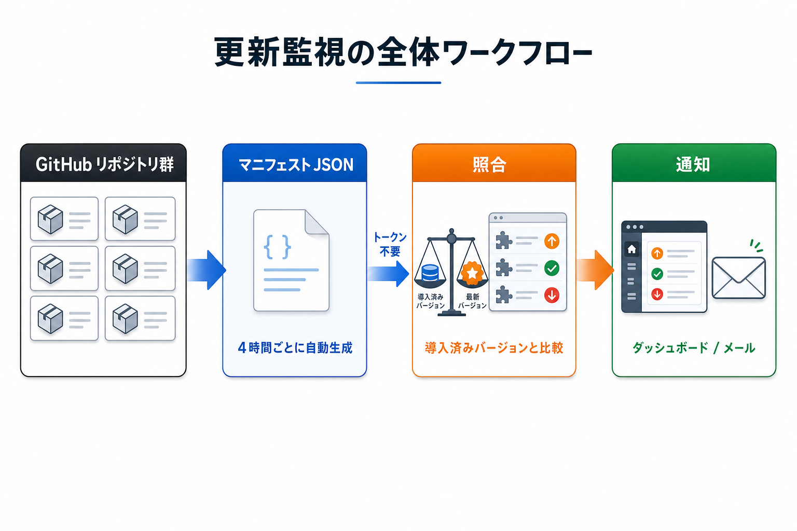

Kashiwazaki SEO ControlPanel マニュアル

柏崎剛が GitHub で公開する wp- 付きプラグイン/テーマの最新版を単一のマニフェストから取得し、インストール済みのバージョンが古い場合に管理画面とメールで通知する、作者専用のコントロールパネルです。アクセストークンは不要で、本プラグイン自身の自己更新にも対応します。
WordPress 公式ディレクトリに申請していないプラグイン/テーマは、標準の自動更新通知が届きません。そのため古いバージョンのまま放置されやすく、脆弱性を抱えたままになるリスクがあります。本プラグインは、作者が公開する単一のマニフェスト（全 wp- プラグイン/テーマの最新版情報をまとめた JSON）を 1 ファイル取得するだけで、サイトに導入済みのプラグイン/テーマの更新有無をまとめてチェックします。GitHub API を個別に呼び出さないため、アクセストークンの設定や API レート制限の心配はありません。
主要機能
更新監視
導入済みの wp- 付きプラグイン/テーマとマニフェストの最新版を照合し、更新の有無を一覧表示。更新内容を「セキュリティ / バグ修正 / 機能」の 3 種類に分類して表示します。
通知
更新を検知すると管理画面のダッシュボードとメールでお知らせ。セキュリティ更新は強調表示され、優先して即時にメール通知できます。
自己更新
本プラグイン自身の新バージョンも検知し、WordPress 標準のプラグイン更新フローでそのまま更新できます。作者の最新ニュースも管理画面で確認できます。
SEO / GEO における強み
SEO の観点: 古いプラグイン/テーマの放置は、脆弱性を突かれたサイト改ざんやスパム注入の原因となり、検索評価に深刻な悪影響を及ぼす場合があります。本プラグインは公式ディレクトリ未申請のプラグイン/テーマにも更新通知の仕組みを提供し、とくにセキュリティ更新を強調・優先通知することで、こうしたリスクを早期に把握する助けになります。
GEO（生成エンジン最適化）の観点: AI 検索・生成エンジンに正しく参照されるためには、サイトが改ざんされず健全な状態で運用されていることが前提条件です。更新の見落としを防ぐ運用は、その土台作りに寄与します。
ページ速度への影響: 本プラグインは管理画面専用で、サイトの公開側（フロントエンド）には CSS / JavaScript を一切読み込みません。ページ表示速度や Core Web Vitals に影響を与えない設計です。

目次
- 概要 - プラグインの概要と主要機能の紹介
- インストール・初期設定 - インストール手順と初期設定の方法
- 更新一覧と更新の種類 - 更新一覧の見方と 3 分類（セキュリティ / バグ修正 / 機能）の意味
- 通知（メール・ダッシュボード） - ダッシュボードウィジェットとメール通知の設定
- 作者ニュース - 作者の最新ニュースの表示と設定
- トラブルシューティング - よくある問題と解決方法
動作要件
- WordPress 5.8 以上
- PHP 7.2 以上
- 特別な PHP 拡張・アクセストークン・API キーは不要
- 外部通信先: マニフェスト配信元（既定 raw.githubusercontent.com）と www.tsuyoshikashiwazaki.jp（ニュース取得、無効化可）